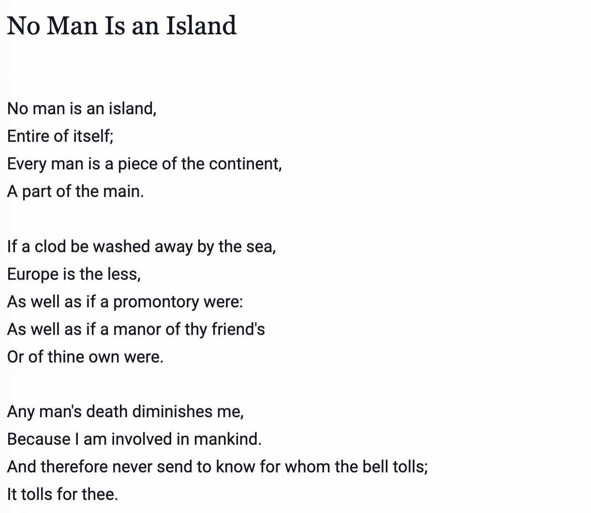

🍅 Biases, Memes, Brands, Viral Trends… and Rumours!
Whom (not “who”!!) will you Copy today?
Rumours
Biases
Viral Trends
Memes
Network Effects
{kind=link}
Introduction

- John Donne, from Devotions Upon Emergent Occasions
From https://nosweatshakespeare.com/quotes/famous/no-man-is-an-island
The words ‘No man is an island’ were embedded in a deeply Christian sermon about how human beings are connected to each other, and how important that connection is for the wellbeing and survival of any individual. When you hear the church bell tolling for someone who has died, don’t ask who it is, Donne says, just know that it’s tolling for you too because you are part of the same society and the death of anyone takes a part of your own life away.
Does the Bell toll for thee?
The Game of the Polygons
Let us explore, sadly, the dark side of Game Theory, and of course Networks. Where our own agent-like actions lead to bad outcomes in Society…
Always?
Not if we…choose to copy others but wisely !!
Let us play The Parable of the Polygons https://ncase.me/polygons/
The Parable of the Polygons was created by Vi Hart and Nicky Case in order to demonstrate how small individual biases can have large societal consequences in terms of segregation. This project is based on the work of Thomas Schelling’s Dynamic Models of Segregation.
Another Dark Side of…
Why are Petrol Stations located next to each other? Here is the Hotelling’s Phenomenon, explained.
Vaccinations: For or Against?
If there are nasty Rumours in circulation, then it is well to be vaccinated against them. But if there are good news stories, or even brands, or cultural trends, one needs to be in with the group. (Can you see costs lurking in here?)
What are the effects of vaccinations? How can one be intellectually vaccinated, and when needed physiologically vaccinated?
And of course, there is Nicky Case again!
Discussion Questions
- So how does one scotch/stop a rumour? Can you be vaccinated against rumours? Is there a game-theoretic cost for the vaccination?
- How does one be individual and different and still one of the gang? Is it possible to be inside and outside the group at the same time? Is it a good idea to be an insider and an outsider at the same time?
- How do Echo Chambers work?
- (VCSB folks) How does one think of products and ads, or policy messages? (Remember the “Bell Bajaao” campaign?
- There are popular and well-known phrases and memes in every language! Use them in Design!!
- Does a meme automatically create a community?
- Did you notice a famous Srishti mathematical meme at the end of the Nicky Case Interactive?
Conclusions
- Individual Actions Matter. Because they can be “reverse infections” and be contagious, in a positive way.
- Correlations between Individual Actions can create “standing waves” or “resonances” on the fabric of society.
- Whatsapp “echo chambers”
- Popularity of Memes, Songs, and Movie lines
- Taglines from Ads, and Products ( e.g. “Think Different”. Bah.)
- When we want to design an ad for a product, or a policy that we want everyone to follow, we are trying to ensure that those actions become part of people’s vocabulary
- And we want those actions to be contagious” ( in a nice way!) so that “many people copy each other”
References
- Thomas Schelling.Dynamic Models of Segregation. https://www.stat.berkeley.edu/~aldous/157/Papers/Schelling_Seg_Models.pdf
- Henderson, Ron. 12 June 2022. Luxury Beliefs are Status Symbols: The struggle for distinction. https://www.robkhenderson.com/p/status-symbols-and-the-struggle-for?utm_campaign=post&utm_medium=web. Accessed 07 Jan 2024.
Rob Henderson’s Idea of “Luxury Beliefs” - The Network Effects Bible. https://www.nfx.com/post/network-effects-bible
- Mitchell Resnick. Beyond the Centralized Mindset. https://web.media.mit.edu/~mres/papers/JLS/JLS-1.0.html
- Thomas W. Valente.(2012). Network Interventions. Science(337) 49. Available here https://sci-hub.se/10.1126/science.1217330. The term “network interventions” describes the process of using social network data to accelerate behavior change or improve organizational performance. In this Review, four strategies for network interventions are described, each of which has multiple tactical alternatives.
- Nicholas Christakis. (May 3, 2024). To exploit social contagion, tools are needed to efficiently identify individuals who are better able to initiate cascades. To be maximally useful, such tools should be deployable without having to actually map face-to-face social network interactions. This is a paper that presents design tools that exploit the “Friendship Paradox” to create Social Contagion. A quick summary of the paper is available here. https://www.science.org/doi/10.1126/science.adi5147
- David Pinsoff. (Dec 2025).Everything is Bullshit Substack. https://www.everythingisbullshit.blog/p/a-big-misunderstanding
- fee.org.(Wednesday, September 19, 2018 )How Can Game Theory Prevent Disease Outbreaks.https://fee.org/articles/how-game-theory-can-help-prevent-disease-outbreaks/
Appendix
What was that “Standing Wave” thingy?
Here is an explanation of how echoes create standing waves that can metaphorically be used to depict viral trends in society.
In physics, we have a phenomenon called “Standing Waves” or “Resonance”. We have an metallic enclosure, into which we unleash an electromagnetic wave (never mind how!). If the dimensions of the enclosure are an integer-multiple of the half-wavelength ( whoa!), then there will always be fixed positions of maxima and minima of the wave.
OK, here is where I begin to mix metaphors!
Assume we lauch a wave-rumour heading towards the right. It takes some time to cover the distance to the far end. At the far end of the box, there’s someone else who echoes the same rumour and creates a counter-propagating wave-rumour in the opposite direction. These add constructively together ( since the dimensions/propagation time permit it ) and create the standing pattern.
Think of it as ripples on the water that never move! They are in the same place !
Why does it vary up and down? Why can’t it just stand? Well, for the metaphor to work, you need wave propagation. For wave-propagation you need an AC field, not DC. Sure you don’t want an engineering electromagnetics class, with Mr. Maxwell?
The reason is that the enclosure echoes/reflects the wave
So, when in a chamber, don’t reflect, just absorb. That’s being vaccinated.
{kind=link}